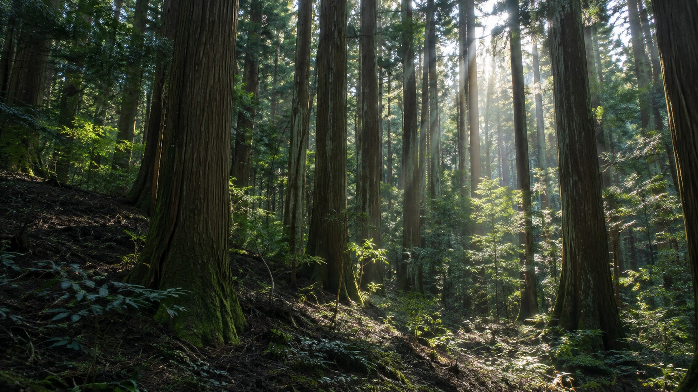
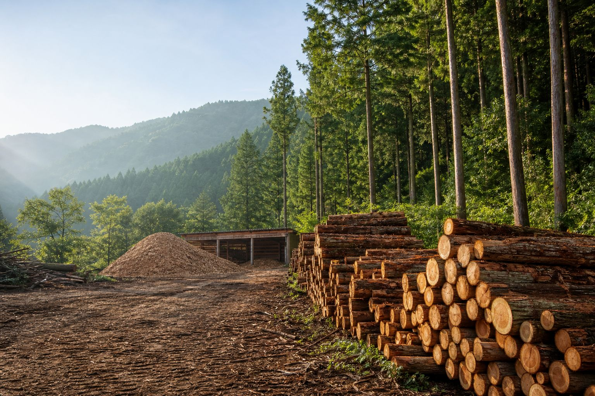
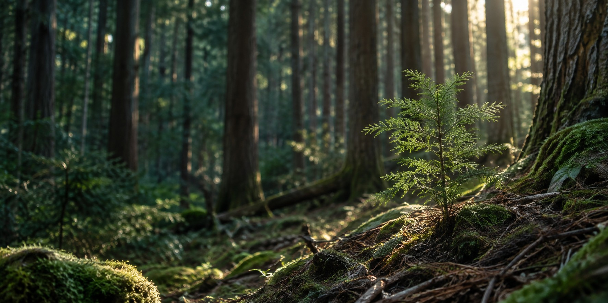
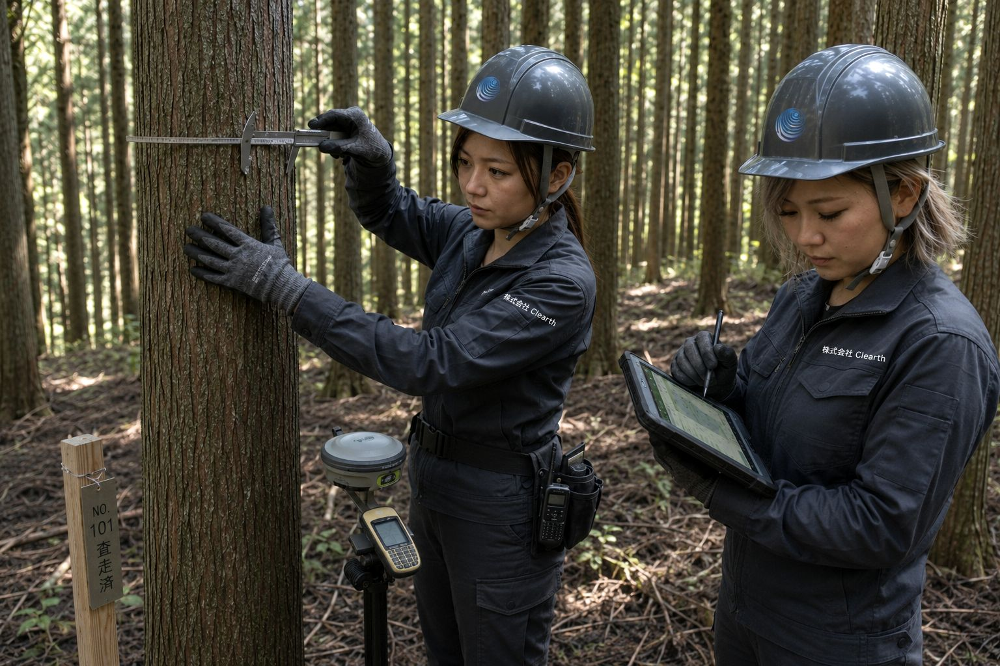

01
森を知る
森の今を知ることから、すべては始まります。
森林の状態を確認し、地域ごとの特性や課題を丁寧に把握します。
 株式会社ClearthForest Resource Company
株式会社ClearthForest Resource Company

CLEARTH FOREST STORY
森を整え、資源を活かし、未来へつなぐ。
森林から生まれる価値を、地域と未来へつないでいく。
OUR STORY
森の手入れ、伐採、搬出、資源の活用。
その一つひとつは、別々の仕事ではありません。
森林を整え、そこから生まれた木材を資源として活かし、
地域の暮らしや産業、そして次の世代の森へとつないでいく。
それが、Clearthの考える森づくりです。
株式会社Clearthは、
森林整備から木材の搬出・加工、木質チップ製造、
バイオマス燃料供給までを一つの流れとしてつなぎ、
森林資源の価値を未来へ渡していきます。
FOREST STORY
01
森の今を知ることから、すべては始まります。
森林の状態を確認し、地域ごとの特性や課題を丁寧に把握します。

02
森を健やかに保つために、
必要な森林整備や間伐、伐採を行います。
人の手が入ることで森に光が届き、
次の森林へつながる環境を整えます。

03
整備や伐採から生まれる間伐材・未利用材・伐採木は、
大切な森林資源です。
一本一本の木を無駄にせず、
用途に応じて次の利用へつなげます。

04
今、森と向き合うことは、
未来の森林を育てることにつながります。
森林資源を循環させ、
次の世代へ豊かな森と地域をつないでいきます。
FOREST RESOURCE CYCLE
森を整え、木を搬出し、資源へ変え、
木質バイオマス燃料として活用する。
その一連の流れをつなぐことが、
Clearthの事業です。
森がつなぐ、
循環する未来へ。CIRCULATION CREATES TOMORROW
01
森林を健全に保ち、地域の安全と木材資源の活用につなげます。
02
伐採した木材を重機と車両で安全に搬出し、次の工程へ運びます。

03
木材を破砕・選別し、用途に応じた木質チップへ加工します。

04
加工した木質チップを、バイオマス発電用燃料として供給します。
05
木質バイオマス燃料の供給を通じて、再生可能エネルギーの利用を支えます。
06
森林資源を循環利用し、健全な森林を次の世代へつないでいきます。

CIRCULAR
BIOECONOMY
OUR APPROACH
サーキュラーバイオエコノミーとは、
森林などから生まれる再生可能な生物資源を、
できる限り循環利用し、
新しい価値やエネルギーへつなげていく考え方です。
Clearthでは、
森林整備や伐採から生まれる
間伐材・未利用材・伐採木を森林資源として活用し、
一次破砕・選別・木質チップ製造を経て、
バイオマス燃料など次の用途へつなげています。
SUSTAINABILITY
森林資源を循環させる日々の事業を通じて、
健全な森林づくりと資源の有効活用、
そして地域の持続可能な未来に貢献します。
01
森林の状態に応じた整備を重ね、
次の管理と森づくりへつなげます。
02
森林から生まれた木材を選別・加工し、
用途に応じた木質資源として活かします。
03
木質バイオマス燃料の供給を通じて、
再生可能エネルギーの活用と
地域資源の循環を支えます。
SDGs
Clearthの実際の事業との関わりが深い目標を掲載し、
森林整備や木材資源の活用とのつながりを示しています。

木質バイオマス燃料を供給し、再生可能エネルギーの利用を支えます。

森林整備や木材の加工・供給を通じて、地域の仕事と事業活動につなげます。

搬出から一次破砕、木質チップ製造、供給までの工程を支えます。

危険木への対応や森林整備を通じて、地域の安全に関わる作業に取り組みます。

森林から生まれる木材を資源として活かし、次の用途へつなげます。

森林整備と、再生可能エネルギーに利用される木質バイオマス燃料の供給に取り組みます。

森林の状態に応じた整備を行い、森林を次の世代へつなぐ管理に取り組みます。

行政・森林所有者・発電所・地域事業者との連携を大切にします。
株式会社Clearthは持続可能な開発目標（SDGs）を支援しています。
ロゴ・アイコン出典：国連広報センター ／ 国際連合 Sustainable Development Goals
本ページの内容は国際連合の承認を受けたものではなく、国際連合またはその職員、加盟国の見解を反映するものではありません。
OUR VISION
森林資源が地域の中で循環し、
その価値が次の世代へ受け継がれていく未来を、
地域の皆さまとともに目指します。
整えられた森林が
次の世代へつながる地域。
地域の木材が
次の用途へ活かされ続ける循環。
森林・木材・エネルギーの
つながりを育てる。
森林所有者や地域事業者とともに
つくる未来。
森林から生まれた価値が、地域の中を巡り、
次の世代へつながっていく。